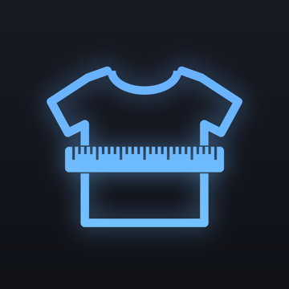
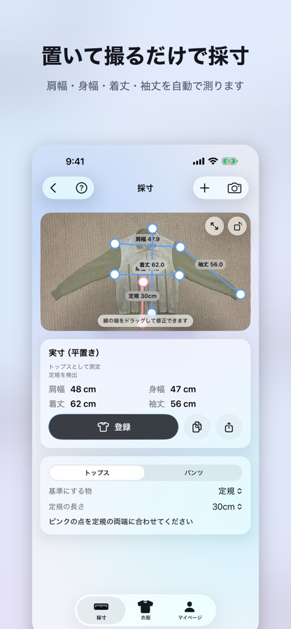
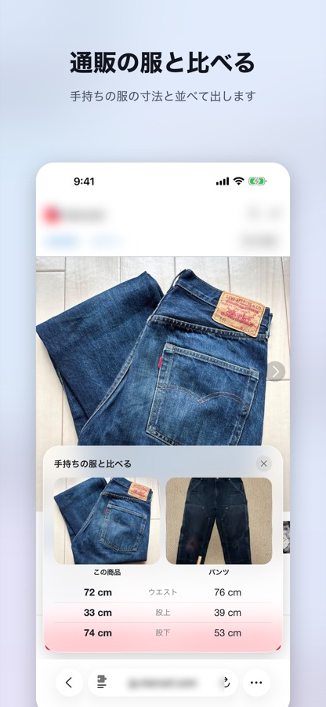
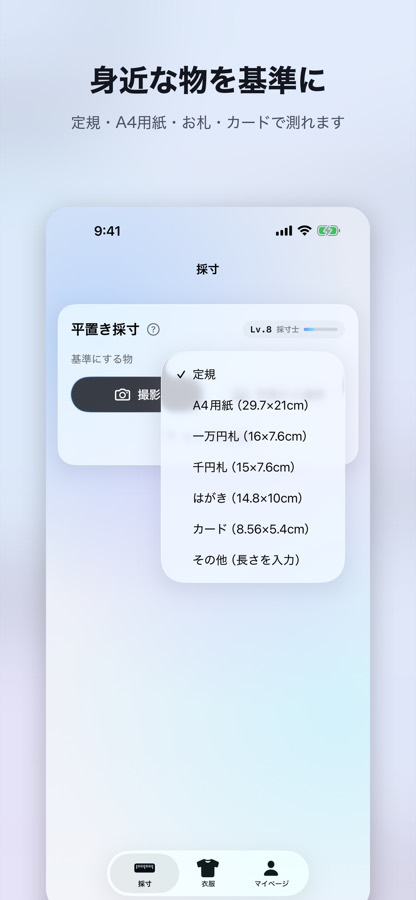
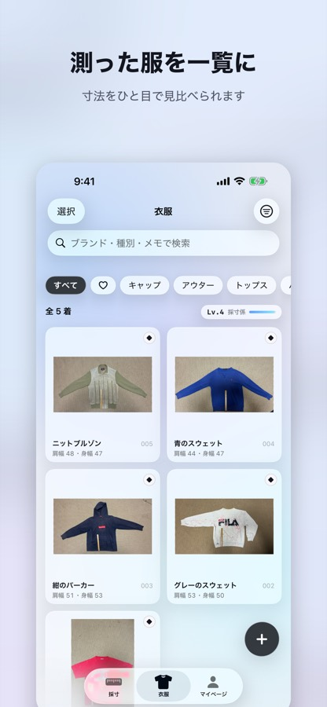
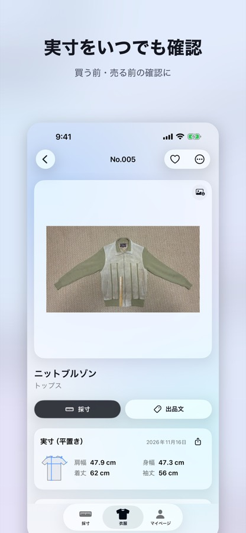

Clozee
置いて撮るだけで、服を採寸。
古着のサイズで、もう失敗しない。
定規を一緒に写すだけで、肩幅・身幅・着丈・袖丈を自動で測ります。
App Storeで入手無料・iPhone 開かないときは、こちらからApp StoreへTikTokやInstagramの中では、App Storeが開かないことがあります。右上の「…」から「ブラウザで開く」を選ぶか、してSafariに貼り付けてください。





アプリを入れる前に、古着のサイズ判定をブラウザで試せます。出品文を貼るだけで、手持ちの1着とのcm差が分かります。
- 置いて撮るだけで採寸線の端をドラッグすれば、その場で直せます。
- 通販の服と比べる買う前に、手持ちのいちばん似た服とサイズを並べて見られます。
- メルカリの出品に測った数字入りの出品文と、採寸画像を作れます。